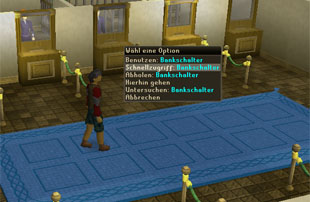

")
Die Bank
Einführung | Ordner in der Bank | Verschieben von Gegenständen | Bankfelder für Mitglieder und Nicht-Mitglieder
Benutzung von Zertifikaten | Lasttiere | Bank-PIN
Benutzung von Zertifikaten | Lasttiere | Bank-PIN
Einführung
Wenn ihr mit der Zeit auf RuneScape reicher und reicher werdet, wird der Platz in eurem Inventar nicht mehr ausreichen, um alle eure Gegenstände zu verstauen. Außerdem ist es äußerst riskant, seinen gesamten Besitz mit sich zu tragen, da das meiste davon für immer verloren gehen wird, wenn man stirbt.
Um solch einem verheerenden Verlust vorzubeugen, gibt es für euren Spielcharakter ein Bankschließfach. Ihr könnt jeden Gegenstand in euer Bankschließfach legen und ihn jederzeit in jeder Bank wieder an euch nehmen.
Die Bank von RuneScape hat Niederlassungen in der ganzen Welt. Eine Bank kann man in Varrock, Falador, Edgeville, im Dorf Draynor und in vielen anderen bewohnten Gegenden finden.

Durch einen Rechtsklick auf den Bankschalter erhaltet ihr die folgenden Optionen zur Auswahl: Benutzen: Bankschalter, Schnellzugriff: Bankschalter, Abholen: Bankschalter und Untersuchen: Bankschalter. Bei der Benutzung einer Maus mit nur einer Taste werden immer alle Optionen erscheinen.
Wählt ihr nun Benutzen: Bankschalter aus, beginnt ein Gespräch mit dem Bankangestellten. Wollt ihr das umgehen und direkt auf euer Bankschließfach zugreifen, müsst ihr die Option Schnellzugriff: Bankschalter anklicken.

Wenn ihr die Bank benutzt, wird sich euer Bankschließfach öffnen. Nun könnt ihr alle Gegenstände sehen, die ihr gesammelt und hier gelagert habt.
Wie viel Platz ihr in eurem Bankschließfach habt, hängt davon ab, ob ihr ein Mitglied seid oder nicht. Spieler, die kein Mitglied sind, haben 68 Felder in ihrem Bankschließfach zur Verfügung, Mitglieder hingegen mehrere hundert Felder.

Einige Gegenstände lassen sich nicht in eurem Schließfach stapeln, da das die Bankangestellten zu sehr verwirren würde. Diese Gegenstände werden normalerweise verwendet, um darin andere Gegenstände aufzubewahren. Die Ranzen aus dem Abenteuer Der Turm des Lebens wären ein Beispiel für nicht-stapelbare Gegenstände. Andere Gegenstände kann man nicht im Bankschließfach ablegen, aber diese sind eine Seltenheit auf RuneScape.
Um einen Gegenstand zu entnehmen oder zu deponieren, müsst ihr ihn anklicken. Spieler, die eine Maus mit mehreren Tasten benutzen, werden dadurch einen einzigen Gegenstand entnehmen bzw. deponieren. Bei einer Maus mit nur einer Taste erhält der Spieler ein Menü mit Optionen.
Um mehrere Gegenstände auf einmal zu deponieren, müssen Spieler mit einer Maus mit mehreren Tasten auf den betreffenden Gegenstand rechtsklicken. Danach können sie die Menge, die sie entnehmen oder deponieren möchten, in einem Menü auswählen. Als Alternative können sie auch die drei Symbole unten rechts benutzen, um alles aus ihrem Inventar, Ausrüstungsfenster oder dem Inventar ihres Vertrauten zu deponieren. Das Benutzen der Banken ist kostenlos, es ist also bestimmt eine gute Idee, häufig von ihnen Gebrauch zu machen, um eure Gegenstände sicher zu verstauen.
 Wenn sich euer Bankschließfach mit immer mehr Gegenständen füllt, ist es nützlich zu wissen, dass es eine Funktion gibt, euer Schließfach nach Gegenständen zu durchsuchen. Klickt einfach auf die Schaltfläche 'Durchsuchen' und tippt den Namen des Gegenstands (bzw. einen Teil davon) ein, nach dem ihr sucht. So werden alle anderen Gegenstände herausgefiltert und ihr findet ohne Probleme einen Gegenstand, der in den Tiefen eures überquellenden Schließfachs verborgen war. Die Suchfunktion könnt ihr jederzeit abschalten, indem ihr noch mal auf 'Durchsuchen' oder auf etwas außerhalb des Suchfensters klickt.
Wenn sich euer Bankschließfach mit immer mehr Gegenständen füllt, ist es nützlich zu wissen, dass es eine Funktion gibt, euer Schließfach nach Gegenständen zu durchsuchen. Klickt einfach auf die Schaltfläche 'Durchsuchen' und tippt den Namen des Gegenstands (bzw. einen Teil davon) ein, nach dem ihr sucht. So werden alle anderen Gegenstände herausgefiltert und ihr findet ohne Probleme einen Gegenstand, der in den Tiefen eures überquellenden Schließfachs verborgen war. Die Suchfunktion könnt ihr jederzeit abschalten, indem ihr noch mal auf 'Durchsuchen' oder auf etwas außerhalb des Suchfensters klickt.
Ordner in der Bank

Um einen Ordner einzurichten, müsst ihr einfach einen Gegenstand auf den Ordner ziehen, der mit einem '+' gekennzeichnet ist. So entsteht ein Ordner, in dem nur die von euch abgelegten Gegenstände angezeigt werden. Wenn ihr mehr Gegenstände in den Ordner zieht, werden sie dort abgelegt. Jeder der Ordner wird im Hauptfenster eures Schließfachs zu sehen sein - alternativ könnt ihr auf einen der Ordner klicken, um nur die darin abgelegten Gegenstände zu sehen.
Wenn ihr beispielsweise euer Nahkampf-Rüstzeug an einem Ort aufbewahren wollt, an dem ihr es leicht wiederfindet, könnt ihr dafür einen extra Ordner anlegen. Ihr könnt es dann auch weiterhin im Hauptordner finden (dazu müsst ihr auf den Ordner 'Alle' klicken). Aber jeder Unterordner gibt euch die Möglichkeit, spezifische Gegenstände auszuwählen, sodass ihr sie leichter wiederfindet.
Außerdem könnt ihr Gegenstände aus der Suchfunktion in einen Ordner ziehen oder einen neuen damit anlegen. Ihr könnt bis zu 8 Ordner erstellen. Damit ihr auf einen Blick seht, wie viel Platz ihr noch in eurem Schließfach habt, gibt es jetzt eine Anzeige unten in eurem Bankfenster.
Um einen Ordner zu entfernen, rechtsklickt einfach auf 'Ordner entfernen'. Ordner werden auch aufgelöst, wenn ihr sie komplett leerräumt.
Gegenstände sortieren
 Es gibt zwei Möglichkeiten, die Gegenstände im Bankschließfach zu sortieren: Tauschen und Einfügen. Zwischen diesen könnt ihr hin- und herschalten, indem ihr auf die Schaltfläche 'Tauschen/Einfügen' am unteren Rand des Bankfensters klickt. Wenn ihr'Tauschen' angeklickt habt, müsst ihr einen Gegenstand mit der Maus auswählen und über einen anderen ziehen. Wenn ihr dann die Maustaste loslasst, tauschen beide den Platz.
Es gibt zwei Möglichkeiten, die Gegenstände im Bankschließfach zu sortieren: Tauschen und Einfügen. Zwischen diesen könnt ihr hin- und herschalten, indem ihr auf die Schaltfläche 'Tauschen/Einfügen' am unteren Rand des Bankfensters klickt. Wenn ihr'Tauschen' angeklickt habt, müsst ihr einen Gegenstand mit der Maus auswählen und über einen anderen ziehen. Wenn ihr dann die Maustaste loslasst, tauschen beide den Platz. Wenn ihr die Option 'Einfügen' ausgewählt habt, könnt ihr einen Gegenstand über einen anderen ziehen, sodass eine Lücke für den neuen Gegenstand entsteht, in die dieser eingefügt wird.
Bankfelder für Mitglieder und Nicht-Mitglieder
 Diese Zahlen stehen für eure kostenlosen und Mitglieder-Bankfelder. Die Zahlen auf der linken Seite, die durch eine horizontale Linie getrennt werden, zeigen euch eure kostenlosen Bankfelder an. In diesem Fall sind alle verfügbaren kostenlosen Bankplätze des Spielers belegt (68 Gegenstände in 68 Bankfeldern).
Diese Zahlen stehen für eure kostenlosen und Mitglieder-Bankfelder. Die Zahlen auf der linken Seite, die durch eine horizontale Linie getrennt werden, zeigen euch eure kostenlosen Bankfelder an. In diesem Fall sind alle verfügbaren kostenlosen Bankplätze des Spielers belegt (68 Gegenstände in 68 Bankfeldern). Die anderen zwei Zahlen, wiederum durch einen Schrägstrich abgetrennt, zeigen an, wie viel Platz ihr als Mitglied im Bankschließfach habt und wie viele Felder davon bereits benutzt werden. In diesem Beispiel hat der Spieler nur 45 seiner 438 Bankfelder ausgenutzt, die ihm als Mitglied zur Verfügung stehen.
Wenn ihr euch diese Zahlen anschaut, gibt es ein paar Dinge, die ihr im Hinterkopf behalten solltet.
- Mitgliedern stehen insgesamt 506 Bankfelder zur Verfügung (68 kostenlose und 438 Mitglieder-Felder).
- Kostenlose Spieler, die noch über Mitglieder-Gegenstände verfügen, können bis zu 438 Mitglieder-Gegenstände in ihren Mitglieder-Bankfeldern lagern. Außerdem können sie bis zu 68 kostenlose Gegenstände in den kostenlosen Feldern deponieren.
- Bei Spielern, die mehr als 438 Mitglieder-Gegenstände besitzen, verlagern sich manche davon in ihre kostenlosen Bankfelder. Bei Spielern, die mehr als 68 kostenlose Gegenstände besitzen, verlagern sich dafür manche in die Mitglieder-Bankfelder. Wenn ihr mit eurer Maus über die Zahlen am unteren Rand eures Bankfensters fahrt, seht ihr, wie viele sich verlagert haben. Wenn jemand z. B. 70 kostenlose und 30 Mitglieder-Gegenstände gelagert hat, sieht folgende Anzeige: '68/68 - 32/438'. Beim Darüberfahren sieht der Spieler dann, dass er 2 kostenlose Gegenstände in seinen Mitglieder-Bankfeldern deponiert hat.
Benutzung von Zertifikaten
 Alle Gegenstände, die in eurem Inventar nicht in einem Feld gestapelt werden können und zum Handeln geeignet sind (wie etwa Erze oder Nahrungsmittel), könnt ihr in Form von Zertifikaten entnehmen. Falls ein Gegenstand nicht zum Handeln geeignet ist, werdet ihr ihn auch nicht als Zertifikat entnehmen können. Durch diese Option habt ihr die Möglichkeit, große Transaktionen durchzuführen, ohne dabei viele Plätze in eurem Inventar belegen zu müssen. Um Gegenstände als Zertifikat zu entnehmen, müsst ihr die Schaltfläche 'Zertifikat/Gegenstand' im unteren Bereich des Auswahlfensters benutzen.
Alle Gegenstände, die in eurem Inventar nicht in einem Feld gestapelt werden können und zum Handeln geeignet sind (wie etwa Erze oder Nahrungsmittel), könnt ihr in Form von Zertifikaten entnehmen. Falls ein Gegenstand nicht zum Handeln geeignet ist, werdet ihr ihn auch nicht als Zertifikat entnehmen können. Durch diese Option habt ihr die Möglichkeit, große Transaktionen durchzuführen, ohne dabei viele Plätze in eurem Inventar belegen zu müssen. Um Gegenstände als Zertifikat zu entnehmen, müsst ihr die Schaltfläche 'Zertifikat/Gegenstand' im unteren Bereich des Auswahlfensters benutzen. Gegenstände in Form eines Zertifikats könnt ihr weder handhaben noch anziehen. Auch bei den meisten Fertigkeiten könnt ihr sie nicht benutzen. Sie können allerdings an jeden Laden verkauft werden, der auch den Gegenstand selbst kaufen würde. Und es ist ebenfalls möglich, die Zaubersprüche 'Niedere Alchemie' und 'Hohe Alchemie' auf sie anzuwenden.
Lasttiere
 Wenn ihr einen Vertrauten als Lasttier benutzt (mit Beschwörung) dann könnt ihr dessen ganzes Inventar in euer Bankschließfach transferieren, indem ihr auf das Symbol mit dem 'Wolfskopf' am rechten unteren Rand des Bankfensters klickt.
Wenn ihr einen Vertrauten als Lasttier benutzt (mit Beschwörung) dann könnt ihr dessen ganzes Inventar in euer Bankschließfach transferieren, indem ihr auf das Symbol mit dem 'Wolfskopf' am rechten unteren Rand des Bankfensters klickt.
Die Bank-PIN

Am besten erstellt ihr eine PIN-Nummer sofort, wenn ihr das erste Mal auf euer Bankschließfach zugreift.
Um dieses Fenster zu erhalten, müsst ihr lediglich einen Bankangestellten ansprechen und im folgenden Dialog 'Ich möchte meinen PIN-Status abfragen.' anklicken.
Wenn ihr auf 'PIN einrichten' klickt, könnt ihr nun zum ersten Mal eine PIN einstellen. Ihr könnt sie jederzeit später wieder ändern.
Wenn ihr ändern wollt, wie lange es dauert, bis ihr eine neue PIN bekommt, falls ihr die alte vergessen habt, müsst ihr auf 'Sicherheitsverzögerung ändern' klicken.

Weitere Artikel in Steuerung
|
|
|
Weiterführende Informationen Wenn euch dieser Artikel nicht weitergeholfen hat, könnt ihr in den folgenden Kapiteln der RuneScape-Webseite mehr Informationen finden:
|
|